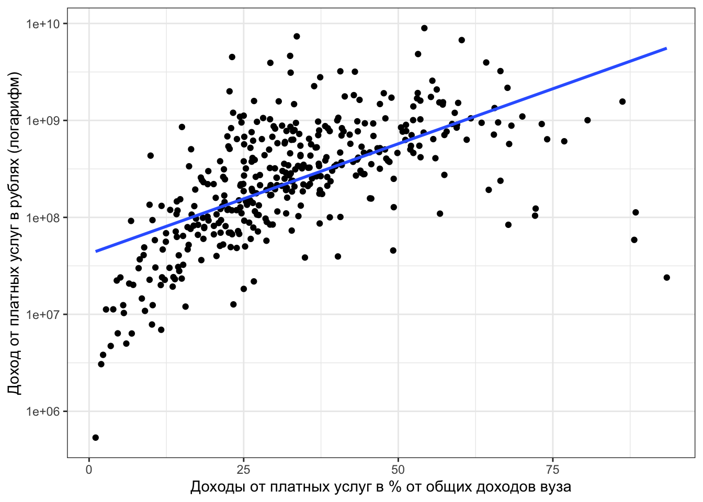
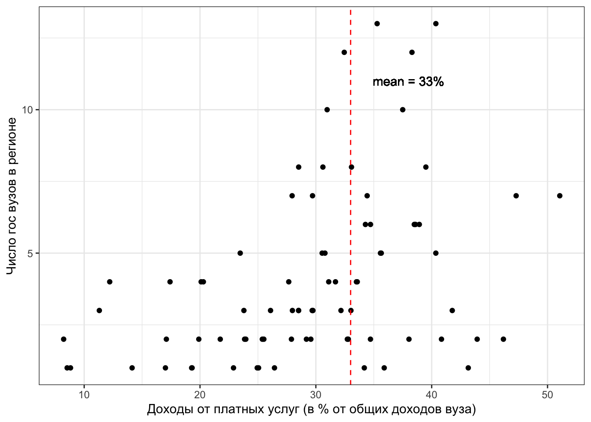

Финансы вузов
2020-09-16
Графики и таблицы из гугл дока
Таблица 3. Описательные статистики доходов вузов
| nobs | NAs | Minimum | Maximum | X1..Quartile | X3..Quartile | Mean | Median | |
|---|---|---|---|---|---|---|---|---|
| Доходы.от.бюджетов.всех.уровней | 391 | 0 | 0.87 | 98 | 53 | 75 | 63 | 65 |
| Доходы.от.приносящ..доход.деятельн. | 391 | 0 | 2.13 | 99 | 25 | 47 | 37 | 35 |
| Расходы.за.счет.бюджетов.всех.уровней | 391 | 0 | 0.92 | 100 | 54 | 77 | 65 | 66 |
| Расходы.за.счет.приносящ..доход.деятельн. | 391 | 0 | 0.00 | 99 | 23 | 46 | 35 | 34 |
Рис. 1. Гистограммы распределения доходов вузов, завязанных на доходах населения и фирм

Таблица 4. Топ-10 вузов с самой большой долей доходов от оказания платных услуг населению и фирмам
Таблица 4а. Топ-10 вузов по доходам от услуг населению и фирмам (в рублях) с указанием какую долю составляют эти доходы от общих
Рис. 1а. Связь доли доходов от платных услуг с абсолютным их выражением в рублях

Рис. 1г. Связь доли доходов от платных услуг и доходов от бюджетов всех уровней (в рублях) по группам регионов
Рис. 4. Доходы от платных услуг населению и фирмам по типам вузов

Таблица 5. Топ-10 регионов с самой большой долей доходов от оказания платных услуг населению и фирмам
Рис. 5. Связь числа вузов в регионе и доли доходов от платных услуг в этих вузах (без Москвы и Спб)

Рис. 6. Отношение расходов от приносящей доход деятельности к доходам от приносящей доход деятельности: гистограмма распределения

Рис. 7. Гистограмма распределения расходов, финансируемых приносящей доход деятельностью

Жопа
Таблица. 7. Расходы на оплату труда, финансируемые за счет денег студентов и фирм
Таблица. 8. Топ вузов с самыми большими расходами на оплату труда из денег студентов и фирм при самой маленькой величине всех остальных расходов
Рис. 9. Расходы на оплату труда из денег студентов и фирм к величине всех остальных расходов: семейства
